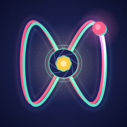

Run · Surge · Evolve
For iPhoneiPhone içinLissaloop
Lissajous curve + loop ↓Lissajous eğrisi + loop ↓A loop-defense idle arcade game. Your shape runs the loop. The loop guards the core. Runners aim and fire on their own; you decide when to surge and what to grow.
Bir döngü savunması oyunu. Şeklin döngüde koşar. Döngü çekirdeği korur. Koşucular kendi kendine nişan alıp ateş eder; ne zaman Surge yapacağına ve neyi büyüteceğine sen karar verirsin.
Where the name comes from
İsim nereden geliyor
Every loop in the game is a Lissajous curve: the figure a point draws when it swings in two directions at once, each at its own steady rhythm.
Nathaniel Bowditch described these curves in 1815. In 1857 the French physicist Jules Antoine Lissajous made them visible: he fixed small mirrors to two tuning forks set at right angles and bounced a beam of light off both onto a wall. You still see them on oscilloscopes today.
The shape depends only on the ratio of the two rhythms. 1:1 draws a circle, 1:2 a figure eight, and denser ratios tie tighter knots. Lissaloop uses six of them. Every point where the curve crosses itself becomes a node that bursts as your runners pass, so the denser the loop, the harder it defends.
Oyundaki her döngü bir Lissajous eğrisi: aynı anda iki yönde, her biri kendi sabit ritmiyle salınan bir noktanın çizdiği şekil.
Nathaniel Bowditch bu eğrileri 1815'te tarif etti. 1857'de Fransız fizikçi Jules Antoine Lissajous onları görünür kıldı: birbirine dik iki diyapazona küçük aynalar tutturdu ve bir ışık demetini ikisinden de yansıtarak duvara düşürdü. Bugün osiloskoplarda hâlâ görürsün.
Şekli yalnızca iki ritmin oranı belirler. 1:1 bir daire çizer, 1:2 bir sekiz; oran yoğunlaştıkça eğri daha sıkı düğümler atar. Lissaloop bunlardan altısını kullanır. Eğrinin kendini kestiği her nokta, koşucuların geçtikçe patlayan bir node olur; döngü ne kadar yoğunsa o kadar sert savunur.
y = sin(2·t)
In the game, Rewire bends your loop into the next ratio, just like this. Tap a loop to jump to it.
Oyunda Rewire, döngünü bir sonraki orana büker, tıpkı bunun gibi. Birine dokunarak ona geç.
How to play
Nasıl oynanır
The loop is your only wall.
Threats drift in from every side toward the core. Your runners circle the loop and fire at whatever comes close. If the core falls, you are pushed back five waves.
Döngü tek duvarın.
Tehditler her yönden çekirdeğe doğru süzülür. Koşucuların döngüde döner ve yaklaşan her şeye ateş eder. Çekirdek düşerse beş dalga geri gidersin.
-
Runners aim and fire on their own
Koşucular kendi kendine nişan alıp ateş eder
-
Hold anywhere on the field to surge: one full bar per wave, so when you spend it matters
Surge için sahada herhangi bir yere basılı tut: her dalga bir dolu çubuk, ne zaman harcadığın önemli
-
Evolve for new weapons, rewire for new loops
Evrimle yeni silahlar, yeniden bağlayarak yeni döngüler aç
What is in it
İçinde ne var
Hard on purpose. Strategy over grinding.
Six loops, seven forms
Rewire from Ring to Eight, Knot, Pretzel, Bloom and Weave: every denser loop adds nodes that burst as your runners pass. Evolve from Dot to Nova, one new weapon with each form.
Waves that change the rules
Every tenth wave the Warden arrives and calls in drifters. In between, Rush, Siege and Armored waves each ask for a different build, and a clean defense pays a bonus.
Ascend for prisms
When you hit a wall, start over from wave 1 for prisms: a permanent bonus to damage and coins that carries the next run further. Your runners keep earning while you are away.
Bilerek zor. Kasmak yerine strateji.
Altı döngü, yedi form
Ring'den Eight, Knot, Pretzel, Bloom ve Weave'e yeniden bağla: her yoğun döngü, koşucuların geçtikçe patlayan node'lar ekler. Dot'tan Nova'ya evrimleş, her formla yeni bir silah.
Kuralı değiştiren dalgalar
Her onuncu dalgada Warden gelir ve drifter çağırır. Aralarda Rush, Siege ve Armored dalgaları her biri başka bir yapı ister; temiz savunma bonus kazandırır.
Prizma için Yüksel
Duvara dayandığında 1. dalgadan yeniden başla, prizma kazan: hasar ve coin'e kalıcı bir bonus, bir sonraki koşuyu daha ileri taşır. Sen yokken de koşucuların kazanmaya devam eder.
Status
Durum
Preparing for submission.
Lissaloop is feature-complete and going through device testing before it goes to the App Store. This page will link to the listing as soon as it is live.
Gönderime hazırlanıyor.
Lissaloop özellik olarak tamamlandı ve App Store'a gönderilmeden önce cihaz testlerinden geçiyor. Yayına girer girmez bu sayfa App Store bağlantısını gösterecek.
Support
Destek
Made by one person.
Bug reports, purchase problems, refund questions and ideas all reach me at the same address, and I read every one.
Tek kişi tarafından yapılıyor.
Hata bildirimleri, satın alma sorunları, iade soruları ve öneriler aynı adrese ulaşıyor ve hepsini okuyorum.